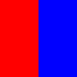
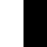

Image-to-scalar inputs and inference
Choose operators by their spatial meaning as well as their return type. A volume is not a stack of unrelated 2D images, and a colour channel is not a spatial coordinate.
Which bundles belong in a library
| Family | Inputs | Meaning |
|---|---|---|
bundle_number_reduceFromImg | Any dimension; accepted pixel kinds vary by operator | Stored sample count, axis sizes, histogram and whole-array statistics |
bundle_number_intensityStatsFromImg | Intensity arrays: 2D, RGB or volumes | All 51 intensity statistics, including inside/outside/difference forms |
bundle_number_similarityNDFromImg | Intensity or binary arrays of equal size | MSE, MAE, correlation, histograms and foreground overlap |
bundle_number_similarity2DFromImg | 2D intensity or binary | Block SSIM, chamfer distance and x/y profile shifts |
| Coordinate bundles | 2D or 3D intensity/binary | Row/column of the maximal sample (maximum channel for RGB) |
| Region and Haar bundles | 2D; pixel kinds vary | Planar windows and their locations |
| Orientation and GLCM | 2D intensity; GLCM also accepts labels | Planar gradients and directional co-occurrences |
| Image graph | 2D binary | Graph from planar component centroids and Delaunay triangles |
| Locate, object, shape and granulometry bundles | 2D intensity or binary | Planar components, Hu moments, morphology and geometry |
| Template matching | 2D intensity or binary | A planar window searched in another image |
| Volume shape, granulometry and profile bundles | 3D intensity or binary; profiles require intensity | Voxel geometry, volumetric morphology and spatial depth |
The original bundle_number_similarityFromImg remains a compatibility collection containing all 13 operators. Use the separate ND and 2D bundles when assembling a new library. No operator has been deleted or renamed.
MAGE.number_similarityFromImg.bundle_number_similarityNDFromImg — Constant
bundle_number_similarityNDFromImgDimension-independent pixel differences, Pearson correlation, histograms and foreground overlap. Works on 2D images, 3D volumes and RGB channel arrays; RGB samples are pooled, not converted to luminance. Masked differences accept a same-size binary mask or a matching 2D mask repeated through a 3D source.
MAGE.number_similarityFromImg.bundle_number_similarity2DFromImg — Constant
bundle_number_similarity2DFromImgPlanar similarity only: 8×8-block SSIM, 2D chamfer distance, and x/y profile shifts. Does not accept volumes or RGB arrays. Use the separate ND bundle for position-free comparisons. The historical bundle_number_similarityFromImg retains every operator as a compatibility collection.
get_image_scalar_bundles filters individual operators using their methods, the available concrete input types and the maximum node arity. For example:
I = typeof(image)
B = typeof(mask)
bundles = get_image_scalar_bundles([I, B, Float64]; domain=:rgb, max_arity=3)Append these extension bundles to a scalar library whose basic bundle already provides identity and constant operators. This supplies shared statistics and comparisons, without planar or volumetric geometry. Pass domain=:volume for volumetric descriptors, or :image2D for planar features. Existing get_extension_*_nb() collections retain their membership and order for compatibility with saved configurations.
RGB is stored as H×W×3 intensity samples. A volume of depth three has exactly the same Julia type. Dispatch cannot distinguish their intended meaning; the domain argument prevents the selector from treating colour as depth. Directly adding a volume bundle to an RGB configuration still gives volume semantics, so choose the appropriate bundle collection.
ROI selection
Intensity statistics accept:
- A binary or intensity ROI with exactly the source's size parameter
S. Intensity membership isvalue ≥ 0.5. - For a 3D source, a 2D ROI with the same height and width. It is repeated logically over every channel/depth slice without allocating a replicated mask. Each selected channel sample or voxel contributes independently.
A full H×W×3 ROI selects individual channel samples; it is not converted to a 2D colour mask. A 3D ROI cannot select a 2D source. Masked MSE, MAE and correlation similarly accept full-size binary masks and spatial 2D masks.
MAGE's framework requires a trailing args... on operators. Thus hasmethod can find a unary whole-image method when an invalid second image is supplied. Such an image is rejected rather than silently ignored as a whole-image call. Required ROI methods (stat_x_out, stat_x_diff) share their size parameters in dispatch. Other unused trailing framework arguments remain supported.
Channel pooling is not luminance
A mean of an RGB array averages all red, green and blue samples. Histogram, entropy, quantile and overlap operators use the same sample-wise convention. Use an RGB-to-intensity operator first when the intended statistic concerns luminance or another colour feature.
| RGB input | 2D ROI (white selects) |
|---|---|
 |  |
(mean=mean_all, inside=mean_inside, outside=mean_outside, difference=mean_difference)(mean = 0.3333333333333333, inside = 0.3333333333333333, outside = 0.3333333333333333, difference = 0.0)The differently coloured regions have equal pooled intensity. This is an actual call to the registered statistics, not an approximation of a colour conversion.
Inference checks
Tests use @inferred on the registered functions themselves, before any library caster runs. They exercise each scalar family and all intensity statistics with N0f8, N0f16, Float32 and Float64 storage, full-size and spatial ROIs, and RGB/volume inputs. Factory regressions also check that image constructors preserve the specialised size and pixel type.
GLCM quantisation bounds every bin explicitly: fixed-point rounding must not produce bins + 1. All-zero inputs occupy the first level. The raw symmetric co-occurrence counts are retained; this does not introduce probability normalisation. Non-finite distance/size parameters use their defaults.
The volume principal-axis calculation uses an explicit covariance loop to avoid capturing a changing count in a boxed comprehension. This preserves its voxel-width correction and eigenvalue calculation while allowing the elongation, flatness and centroid operators to infer their scalar results.
Measured calls
# Rendering and fixture construction are excluded; see Timing methodology.
g_timings()Julia 1.13.2; znver5; 1 Julia thread(s); optimisation level 2.
Times are warmed wall-clock measurements of the actual calls above, including invokelatest and allocations. Loading, factory generation and image rendering are excluded. CPU load and garbage collection affect these values. The maximum is the slowest observed sample, not a worst-case bound.
| Input | Dimensions | Pixel storage |
|---|---|---|
| red/blue RGB #1 | 2×2×3 | IntensityPixel{FixedPointNumbers.N0f8} |
| left-column spatial ROI #2 | 2×2 | BinaryPixel{Bool} |
Numeric-only plot calls of the same operator and arity are grouped: argument ranges cover the sampled values, the median is the median of the per-case medians, and the maximum covers every observed sample. Image calls keep a row for each input/parameter combination.
| Operator | Inputs | Output | Median (µs) | Observed max (µs) | Allocated bytes (median) | Cases / samples |
|---|---|---|---|---|---|---|
stat_mean | red/blue RGB #1 | Float64 | 0.12 | 2.16 | 16 | 1 / 3 |
stat_mean | red/blue RGB #1; left-column spatial ROI #2 | Float64 | 0.58 | 6.95 | 80 | 1 / 3 |
stat_mean_out | red/blue RGB #1; left-column spatial ROI #2 | Float64 | 0.46 | 5.5 | 80 | 1 / 3 |
stat_mean_diff | red/blue RGB #1; left-column spatial ROI #2 | Float64 | 0.46 | 4.71 | 80 | 1 / 3 |